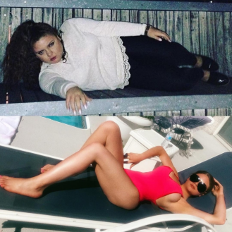
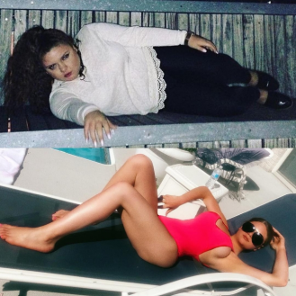

Una historia de adelgazamiento real Ana López, perdió 46 kg en 1 mes

¡Buenos días! Me Llamo Ana, tengo 32 años peso 50 kg, mido 165 cm, pero no siempre ha sido así. Comparto mi historia para ayudar a las chicas y mujeres, iguales que yo, que quieren mejorar su vida.
Vamos a empezar. Siempre tuve problemas de sobrepeso, hasta en el colegio. Siempre estaba gordita, en el instituto pesaba 75 kg, pero no tuve complejos, hasta tenía novio. Cuando finalizamos los estudios, me dejó diciendo que era gorda. No me importó, porque me esperaba una nueva vida interesante de estudiante, pero no tuve mucha suerte.
La vida estudiantil era un infierno para mí. La gente se burlaba de mí y me maltrataba, no tenía amigos, sin hablar de novio, y todo solo porque estaba gorda. Tuve estrés constante no solo causado por los estudios, sino por maltrato continuo. Y empecé a comer mucho, sobre todo dulces, eso me ayudaba un poco a sentirme mejor. Y así durante los estudios mis 75 kg se convirtieron en 95 kg. Por supuesto, intentaba adelgazar, iba a correr, al gimnasio, seguía dietas, y el peso bajaba un poco, pero luego volvía a pasar algo o hubo exámenes y no resistía, luego tuve aún más kilos. Así pasaron mis años universitarios, cuando todo el mundo salía, tenía novios, encontraba amigos, y yo estaba en casa comiendo. Pero luego finalizaron los estudios y empecé a trabajar.
Era una pequeña empresa. Casi todos eran hombres, solo había dos chicas y yo. Al principio, todo iba bien, pero una vez, comiendo, noté que mis colegas se reían de mí hablando de cómo y cuánto como. Esto me horrorizó, ¿será que otra vez?.. No lo soportaré más. Y tomé la decisión, a lo mejor, la más importantes de mi vida: quería adelgazar.

Empecé a analizar todos los medios y métodos de adelgazamiento. Ya había probado muchos, pero no me convenían, el peso siempre volvía. Ya empecé a pensar en una intervención quirúrgica, pero era muy caro y peligroso. Y en aquel momento vi un articulo de un entrenador de fitness famosos que hablaba de las gotas para adelgazar Fortunella. Me interesó y empecé a estudiar este remedio. Como entendí, era un producto bastante nuevo, pero ya de buena fama, que no causaba efectos secundarios ni alergía, estaba basado en componentes naturales y era muy económico. Decidí pedir 1 curso y comprobar si realmente ayuda tan bien a luchar contra el sobrepeso.
Así, al principio de mi ruta a la nueva vida, mi peso era de 109 kg (medía 165 cm).
Ya durante la primera semana perdí cinco kilos. Tomaba las gotas según las instrucciones, 6 veces al día 15 gotas, al añadirlas al agua. También cambié de mis hábitos alimenticios, evitaba harina y dulces, empecé a comer más verduras, intenté comer fruta solo antes de comer. Empecé a montar la bici para ir al trabajo
Perdí 12,5 kilos más, ya no me lo podía creer. Así mismo, no tuve ninguna molestia.
Perdí 32 kilos. Era un verdadero choque para mí. Las gotas Fortunella Resultaron ser un milagro, decidí pedir otro curso, pero al pedirlo me dijeron que las gotas agotaron y aparecerían solo un mes más tarde. Pedí 2 cursos enseguida y empecé a esperar la nueva entrega. .
Por fin, me trajeron las gotas y continué mi ruta. 4 semanas más tarde (desde el principio) ya pesaba 63,5 kilos. ¡Wow!
Al final pesaba 55 kilos. Es decir, perdí 54 kg. Así mismo, la piel no estaba caída, el cuerpo estaba firme, dejé de ahogarme, ya no me dolían las articulaciones. Pero aún no alcancé mi peso deseado porque mi meta era pesar 50 kg.
Mi vida empezó a cambiar, las chicas dejaron de reírse de mí y empezaron a mirarme con respeto. Y mis colegas hombres empezaron a mirarme con interés y piropear.
¡Lo conseguí, peso 50 kg! ¡Perdí 59 kilos!
 

Así, han pasado 1,5 meses desde el principio de mi camio al cuerpo sano y esbelto. Mi vida cambió totalmente. Tuve que dejar el trabajo porque ya no podía trabajar con tantos hombres que no me dejaban en paz, pero no me arrepentí porque encontré un nuevo trabajo más interesante y mejor pagado. Tuve amigos, y conocí a un hombre perfecto.
Si alguien desea cambiar su vida igual que yo, ser guapa, sana y feliz, ¡empiece ahora mismo! Voy a dejar un enlace a la tienda oficial donde se puede adquirir las gotas Fortunella En nuestro país, ahota hay un descuento para estas gotas hasta finales del mes.


Comentarios
Después del parto, tuve 20 kg de más y no podía adelgazar. Afortunadamente, una amiga me recomendó estas gotas. Fortunella me ayudó a perder 19 kg. Mi marido es muy feliz. Me piropea 10 veces más. Parece que vamos a tener otro hijo pronto.
ContestarA los 18 años de edad estaba segura de poder evitar el problema de sobrepeso. Comía todo lo que me apetecía, me dedicaba al karaté y siempre pesaba lo mismo. Pero la vida estudiantil y la falta del tiempo lo cambiaron todo. Dejé de practicar deporté, engordé 5 kg al principio, luego 10... De esta forma, engordé 37 kg. No notaba o no quería notar la grasa en mi cintura y caderas. Me salvaba porque empecé a usar ropa ancha y seguí con mi ritmo de vida habitual.. Las gotas Fortunella me salvaron - ¡26 kg menos en 1 mes!
ContestarYa las pedí para mí también. A propósito, ahora de verdad hay una promoción de -50%, pero me han dicho que es solo hasta finales del mes
ContestarNo creo en estos milagros, lo más probable es que Ana haya seguido alguna dieta y haya frecuentado mucho el gimnasio. Compré estas gotas y no perdí ni un kilo.
ContestarBuenos días, Nuria. ¿Seguía las instrucciones para tomar las gotas?
ContestarBuenos días, Asún. Tomaba 30 gotas al día.
ContestarEs una dosis muy pequeña. Intente tomar 15 gotas 6 veces al día para ver el resultado, y es mejor tomar el curso
ContestarAsún, he usado Su consejo y realmente, 2 semanas más tarde pesaba 5 kg menos.
ContestarEstoy muy contenta por ti.
ContestarLas gotas realmente ayudan. Las descubrí hace 3 meses. Ahora no tengo problemas de sobrepeso, y antes pesaba 85 kg. Para los que ya están cansados de kilos de más y desea adelgazar por fin, no hay remedio mejor.
ContestarGracias por Su historia, Ana. Ahora seguramente lo pediré y empezaré a tomar el curso, ya no tengo más miedos. Y a partir de mañana también empezaré mi camino a la nueva vida.
ContestarLlevo 2 semanas tomando las gotas Fortunella y puedo decir que estoy adelgazado, No pierdo el peso tan rápido, ahora -7kg, pero no cambié de mis hábitos alimenticios, como todo lo que me apetezca y cuándo me apatezca.
Contestar